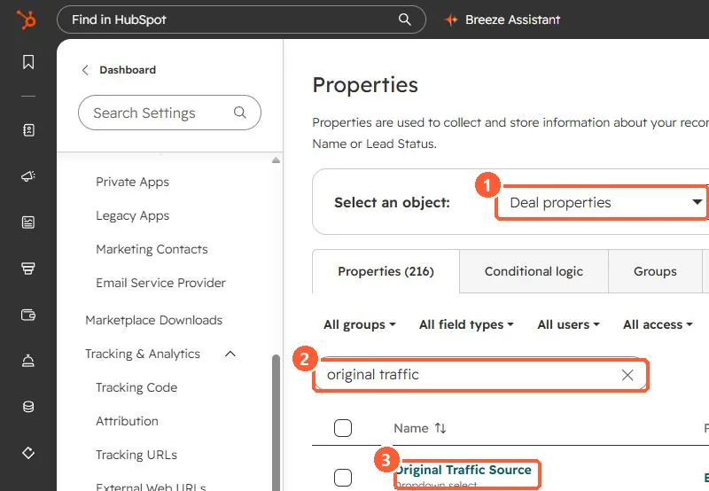
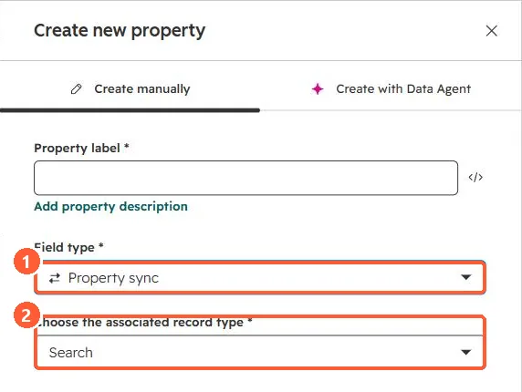

Short answer
HubSpot's KB defines the deal property Original Traffic Source as the original source of the associated contact with the earliest activity, with matching drill-down properties. Check it before building a copy workflow, as one client task originally planned. If you need a different contact's value or another property, the Property sync field type or a workflow's Edit record action can copy it. For the workflow, the association must exist before the action runs.
1. The property already exists
Deal properties in my demo portal, searched for original traffic.


2. When you need your own copy
The create property panel has a Property sync field type that asks which associated record type to read from. I opened it without saving.


3. Or copy with a workflow
- HubSpot's KB says to enroll when the source property is known, and that the association must exist before the Edit record action.
- A contact can have several deals. Decide whether all of them, or only open ones, should get the value.
- For which contact counts, see traffic sources explained and deal attribution requirements.